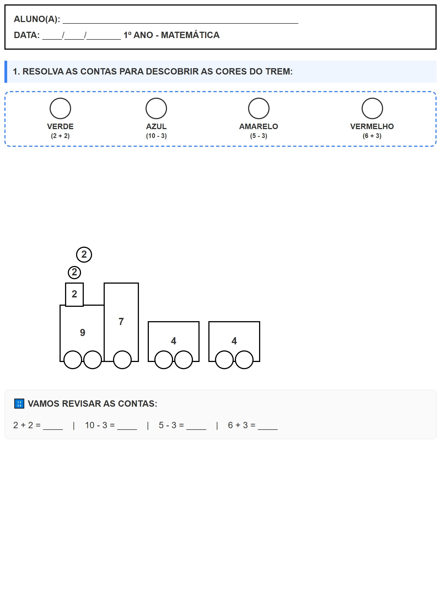

← Voltar ao Portal
ALUNO(A):
________________________________________________
DATA:
____/____/_______
1º ANO - MATEMÁTICA
🚂 Expresso dos Números
1. RESOLVA AS CONTAS PARA DESCOBRIR AS CORES DO TREM:
VERDE
(2 + 2)
AZUL
(10 - 3)
AMARELO
(5 - 3)
VERMELHO
(6 + 3)
9
7
2
4
4
2
2
🔢 VAMOS REVISAR AS CONTAS:
2 + 2 = ____ | 10 - 3 = ____ | 5 - 3 = ____ | 6 + 3 = ____
Visualização da Folha de Atividade
